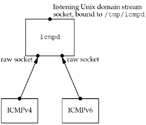
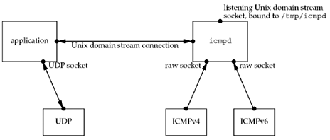
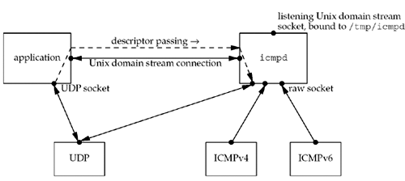
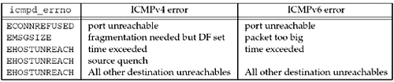

| [ Team LiB ] |
|
28.7 An ICMP Message DaemonReceiving asynchronous ICMP errors on a UDP socket has been, and continues to be, a problem. ICMP errors are received by the kernel, but are rarely delivered to the application that needs to know about them. In the sockets API, we have seen that it requires connecting the UDP socket to one IP address to receive these errors (Section 8.11). The reason for this limitation is that the only error returned from recvfrom is an integer errno code, and if the application sends datagrams to multiple destinations and then calls recvfrom, this function cannot tell the application which datagram encountered an error. In this section, we will provide a solution that does not require any kernel changes. We will provide an ICMP message daemon, icmpd, that creates a raw ICMPv4 socket and a raw ICMPv6 socket and receives all ICMP messages the kernel passes to these two raw sockets. It also creates a Unix domain stream socket, binds it to the pathname /tmp/icmpd, and listens for incoming client connects to this pathname. We will show this in Figure 28.26. Figure 28.26. icmpd daemon: initial sockets created. A UDP application (which is a client to the daemon) first creates its UDP socket, the socket for which it wants to receive asynchronous errors. The application must bind an ephemeral port to this socket, for reasons we will discuss later. It then creates a Unix domain socket and connects to this daemon's well-known pathname. We will show this in Figure 28.27. Figure 28.27. Application creates its UDP socket and a Unix domain connection to the daemon. The application next "passes" its UDP socket to the daemon across the Unix domain connection using descriptor passing, as we described in Section 15.7. This gives the daemon a copy of the socket so that it can call getsockname and obtain the port number bound to the socket. We will show this passing of the socket in Figure 28.28. Figure 28.28. Passing UDP socket to daemon across Unix domain connection. After the daemon obtains the port number bound to the UDP socket, it closes its copy of the socket, taking us back to the arrangement shown in Figure 28.27.
From this point on, any ICMP errors the daemon receives in response to UDP datagrams sent from the port bound to the application's UDP socket cause the daemon to send a message (which we will describe shortly) across the Unix domain socket to the application. The application must therefore use select or poll, awaiting data on either the UDP socket or the Unix domain socket. We now look at the source code for an application using this daemon, and then the daemon itself. We start with Figure 28.29, our header that is included by both the application and the daemon. Figure 28.29 unpicmpd.h header.icmpd/unpicmpd.h
1 #ifndef__unpicmp_h
2 #define__unpicmp_h
3 #include "unp.h"
4 #define ICMPD_PATH "/tmp/icmpd" /* server's well-known pathname */
5 struct icmpd_err {
6 int icmpd_errno; /* EHOSTUNREACH, EMSGSIZE, ECONNREFUSED */
7 char icmpd_type; /* actual ICMPv[46] type */
8 char icmpd_code; /* actual ICMPv[46] code */
9 socklen_t icmpd_len; /* length of sockaddr{} that follows */
10 struct sockaddr_storage icmpd_dest; /* sockaddr_storage handles any size */
11 };
12 #endif /* __unpicmp_h */
4–11 We define the server's well-known pathname and the icmpd_err structure that is passed from the server to the application whenever an ICMP message is received that should be passed to this application. 6–8 A problem is that the ICMPv4 message types differ numerically (and sometimes conceptually) from the ICMPv6 message types (Figures A.15 and A.16). The actual ICMP type and code values are returned, but we also map these into an errno value (icmpd_errno), similar to the final columns in Figures A.15 and A.16. The application can deal with this value instead of the protocol-dependent ICMPv4 or ICMPv6 values. Figure 28.30 shows the ICMP messages that are handled, plus their mapping into an errno value. Figure 28.30. icmpd_errno mapping from ICMPv4 and ICMPv6 errors. The daemon returns five types of ICMP errors.
10 The icmpd_dest member is a socket address structure containing the destination IP address and port of the datagram that generated the ICMP error. This member will be either a sockaddr_in structure for IPv4 or a sockaddr_in6 structure for IPv6. If the application is sending datagrams to multiple destinations, it probably has one socket address structure per destination. By returning this information in a socket address structure, the application can compare it against its own structures to find the one that caused the error. It is a sockaddr_storage to allow storage of any sockaddr type the system supports. UDP Echo Client That Uses Our icmpd DaemonWe now modify our UDP echo client, the dg_cli function, to use our icmpd daemon. Figure 28.31 shows the first half of the function. 2–3 The function arguments are the same as all previous versions of this function. bind wildcard address and ephemeral port12 We call our sock_bind_wild function to bind the wildcard IP address and an ephemeral port to the UDP socket. We do this so that the copy of this socket that we pass to the daemon has bound a port, as the daemon needs to know this port.
Establish Unix domain connection to daemon13–16 We create an AF_LOCAL socket and connect to the daemon's well-known pathname. Figure 28.31 First half of dg_cli application.icmpd/dgcli01.c
1 #include "unpicmpd.h"
2 void
3 dg_cli(FILE *fp, int sockfd, const SA *pservaddr, socklen_t servlen)
4 {
5 int icmpfd, maxfdpl;
6 char sendline[MAXLINE], recvline[MAXLINE + 1];
7 fd_set rset;
8 ssize_t n;
9 struct timeval tv;
10 struct icmpd_err icmpd_err;
11 struct sockaddr_un sun;
12 Sock_bind_wild(sockfd, pservaddr->sa_family);
13 icmpfd = Socket(AF_LOCAL, SOCK_STREAM, 0);
14 sun.sun_family = AF_LOCAL;
15 strcpy(sun.sun_path, ICMPD_PATH);
16 Connect(icmpfd, (SA *) &sun, sizeof(sun));
17 Write_fd(icmpfd, "1", 1, sockfd);
18 n = Read(icmpfd, recvline, 1);
19 if (n != 1 | | recvline[0] != '1')
20 err_quit("error creating icmp socket, n = %d, char = %c",
21 n, recvline[0]);
22 FD_ZERO(&rset);
23 maxfdpl = max(sockfd, icmpfd) + 1;
Send UDP socket to daemon, await daemon's reply17–21 We call our write_fd function from Figure 15.13 to send a copy of our UDP socket to the daemon. We also send a single byte of data, the character "1", because some implementations do not like passing a descriptor without any data. The daemon sends back a single byte of data, consisting of the character "1" to indicate success. Any other reply indicates an error. 22–23 We initialize a descriptor set and calculate the first argument for select (the maximum of the two descriptors, plus one). The last half of our client is shown in Figure 28.32. This is the loop that reads a line from standard input, sends the line to the server, reads back the server's reply, and writes the reply to standard output. Figure 28.32 Last half of dg_cli application.icmpd/dgcli01.c
24 while (Fgets(sendline, MAXLINE, fp) ! = NULL) {
25 Sendto(sockfd, sendline, strlen(sendline), 0, pservaddr, servlen);
26 tv.tv_sec = 5;
27 tv.tv_usec = 0;
28 FD_SET(sockfd, &rset);
29 FD_SET(icmpfd, &rset);
30 if ( (n = Select(maxfdpl, &rset, NULL, NULL, &tv)) == 0) {
31 fprintf(stderr, socket timeout\n);
32 continue;
33 }
34 if (FD_ISSET(sockfd, &rset)) {
35 n = Recvfrom(sockfd, recvline, MAXLINE, 0, NULL, NULL);
36 recvline[n] = 0; /* null terminate */
37 Fputs(recvline, stdout);
38 }
39 if (FD_ISSET(icmpfd, &rset)) {
40 if ( (n = Read(icmpfd, &icmpd_err, sizeof(icmpd_err))) == 0)
41 err_quit ("ICMP daemon terminated");
42 else if (n ! = sizeof(icmpd_err))
43 err_quit("n = %d, expected %d", n, sizeof(icmpd_err));
44 printf("ICMP error: dest = %s, %s, type = %d, code = %d\n",
45 Sock_ntop(&icmpd_err.icmpd_dest, icmpd_err.icmpd_len),
46 strerror(icmpd_err.icmpd_errno),
47 icmpd_err.icmpd_type, icmpd_err.icmpd_code);
48 }
49 }
50 }
Call select26–33 Since we are calling select, we can easily place a timeout on our wait for the echo server's reply. We set this to five seconds, enable both descriptors for readability, and call select. If a timeout occurs, we print a message and go back to the top of the loop. Print server's reply34–38 If a datagram is returned by the server, we print it to standard output. Handle ICMP error39–48 If our Unix domain connection to the icmpd daemon is readable, we try to read an icmpd_err structure. If this succeeds, we print the relevant information the daemon returns.
UDP Echo Client ExamplesWe now show some examples of this client before looking at the daemon source code. We first send datagrams to an IP address that is not connected to the Internet. freebsd % udpcli01 192.0.2.5 echo hi there socket timeout and hello socket timeout We assume icmpd is running and expect ICMP "host unreachable" errors to be returned by some router, but none are received. Instead, our application times out. We show this to reiterate that a timeout is still required and the generation of ICMP messages such as "host unreachable" may not occur. Our next example sends a datagram to the standard echo server on a host that is not running the server. We receive an ICMPv4 "port unreachable" as expected. freebsd % udpcli01 aix-4 echo hello, world ICMP error: dest = 192.168.42.2:7, Connection refused, type = 3, code = 3 We try again with IPv6 and receive an ICMPv6 "port unreachable" as expected. freebsd % udpcli01 aix-6 echo hello, world ICMP error: dest = [3ffe:b80:1f8d:2:204:acff:fe17:bf38] :7, Connection refused, type = 1, code = 4 We have wrapped the long line for readability. icmpd DaemonWe start the description of our icmpd daemon with the icmpd.h header, shown in Figure 28.33. client array2–17 Since the daemon can handle any number of clients, we use an array of client structures to keep the information about each client. This is similar to the data structures we used in Section 6.8. In addition to the descriptor for the Unix domain connection to the client, we also store the address family of the client's UDP socket AF_INET or AF_INET6) and the port number bound to this socket. We also declare the function prototypes and the globals shared by these functions. Figure 28.33 icmpd.h header for icmpd daemon.icmpd/icmpd.h
1 #include "unpicmpd.h"
2 struct client {
3 int connfd; /* Unix domain stream socket to client */
4 int family; /* AF_INET or AF_INET6 */
5 int lport; /* local port bound to client's UDP socket */
6 /* network byte ordered */
7 } client [FD_SETSIZE];
8 /* globals */
9 int fd4, fd6, listenfd, maxi, maxfd, nready;
10 fd_set rset, allset;
11 struct sockaddr_un cliaddr;
12 /* function prototypes */
13 int readable_conn (int);
14 int readable_listen (void);
15 int readable_v4 (void);
16 int readable_v6 (void);
Figure 28.34 First half of main function: creates sockets.icmpd/icmpd.c
1 #include "icmpd.h"
2 int
3 main(int argc, char **argv)
4 {
5 int i, sockfd;
6 struct sockaddr_un sun;
7 if (argc != 1)
8 err_quit ("usage: icmpd");
9 maxi = -1; /* index into client [] array */
10 for (i = 0; i < FD_SETSIZE; i++)
11 client [i] .connfd = -1; /* -1 indicates available entry */
12 FD_ZERO (&allset);
13 fd4 = Socket (AF_INET, SOCK_RAW, IPPROTO_ICMP);
14 FD_SET (fd4, &allset);
15 maxfd = fd4;
16 #ifdef IPV6
17 fd6 = Socket (AF_INET6, SOCK_RAW, IPPROTO_ICMPV6);
18 FD_SET (fd6, &allset);
19 maxfd = max (maxfd, fd6);
20 #endif
21 listenfd = Socket (AF_UNIX, SOCK_STREAM, 0);
22 sun.sun_family = AF_LOCAL;
23 strcpy (sun.sun_path, ICMPD_PATH);
24 unlink (ICMPD_PATH);
25 Bind (listenfd, (SA *) &sun, sizeof (sun));
26 Listen (listenfd, LISTENQ);
27 FD_SET (listenfd, &allset);
28 maxfd = max (maxfd, listenfd);
Figure 28.34 shows the first half of the main function. Initialize client array9–10 The client array is initialized by setting the connected socket member to –1. Create sockets12–28 Three sockets are created: a raw ICMPv4 socket, a raw ICMPv6 socket, and a Unix domain stream socket. We unlink any previously existing instance of the Unix domain socket, bind its well-known pathname to the socket, and call listen. This is the socket to which clients connect. The maximum descriptor is also calculated for select and a socket address structure is allocated for calls to accept. Figure 28.35 shows the second half of the main function, which is an infinite loop that calls select, waiting for any of the daemon's descriptors to be readable. Figure 28.35 Second half of main function: handles readable descriptor.icmpd/icmpd.c
29 for ( ; ; ) {
30 rset = allset;
31 nready = Select (maxfd + 1, &rset, NULL, NULL, NULL);
32 if (FD_ISSET (listenfd, &rset))
33 if (readable_listen () <= 0)
34 continue;
35 if (FD_ISSET (fd4, &rset))
36 if (readable_v4 () <= 0)
37 continue;
38 #ifdef IPV6
39 if (FD_ISSET (fd6, &rset))
40 if (readable_v6 () <= 0)
41 continue;
42 #endif
43 for (i = 0; i <= maxi; i++) { /* check all clients for data */
44 if ( (sockfd = client [i] .connfd) < 0)
45 continue;
46 if (FD_ISSET (sockfd, &rset))
47 if (readable_conn (i) <= 0)
48 break; /* no more readable descriptors */
49 }
50 }
51 exit (0);
52 }
Check listening Unix domain socket32–34 The listening Unix domain socket is tested first and if ready, readable_listen is called. The variable nready, the number of descriptors that select returns as readable, is a global variable. Each of our readable_XXX function decrements this variable and returns its new value as the return value of the function. When this value reaches 0, all the readable descriptors have been processed and select is called again. Check raw ICMP sockets35–42 The raw ICMPv4 socket is tested, and then the raw ICMPv6 socket. Check connected Unix domain sockets43–49 We next check whether any of the connected Unix domain sockets are readable. Readability on any of these sockets means that the client has sent a descriptor, or that the client has terminated. Figure 28.36 shows the readable_listen function, called when the daemon's listening socket is readable. This indicates a new client connection. Figure 28.36 Handle new client connections.icmpd/readable_listen.c
1 #include "icmpd.h"
2 int
3 readable_listen (void)
4 {
5 int i, connfd;
6 socklen_t clilen;
7 clilen = sizeof (cliaddr);
8 connfd = Accept (listenfd, (SA *) &cliaddr, &clilen);
9 /* find first available client [] structure */
10 for (i = 0; i < FD_SETSIZE; i++)
11 if (client [i] .connfd < 0) {
12 client [i] .connfd = connfd; /* save descriptor */
13 break;
14 }
15 if (i == FD_SETSIZE) {
16 close (connfd); /* can't handle new client, */
17 return (--nready); /* rudely close the new connection */
18 }
19 printf ("new connection, i = %d, connfd = %d\n", i, connfd);
20 FD_SET (connfd, &allset); /* add new descriptor to set */
21 if (connfd > maxfd)
22 maxfd = connfd; /* for select () */
23 if (i > maxi)
24 maxi = i; /* max index in client [] array */
25 return (--nready);
26 }
7–25 The connection is accepted and the first available entry in the client array is used. The code in this function was copied from the beginning of Figure 6.22. If an entry couldn't be found in the client array, we simply closed the new client connection and remained to serve our current clients. When a connected socket is readable, our readable_conn function is called (Figure 28.37). Its argument is the index of this client in the client array. Read client data and possibly a descriptor13–18 We call our read_fd function from Figure 15.11 to read the data and possibly a descriptor. If the return value is 0, the client has closed its end of the connection, possibly by terminating. Figure 28.37 Read data and possible descriptor from client.icmpd/readable_conn.c
1 #include "icmpd.h"
2 int
3 readable_conn(int i)
4 {
5 int unixfd, recvfd;
6 char c;
7 ssize_t n;
8 socklen_t len;
9 struct sockaddr_storage ss;
10 unixfd = client [i] .connfd;
11 recvfd = -1;
12 if ( (n = Read_fd (unixfd, &c, 1, &recvfd)) == 0) {
13 err_msg ("client %d terminated, recvfd = %d", i, recvfd);
14 goto clientdone; /* client probably terminated */
15 }
16 /* data from client; should be descriptor */
17 if (recvfd < 0) {
18 err_msg ("read_fd did not return descriptor");
19 goto clienterr;
20 }
16–20 If the client has not closed the connection, then we expect a descriptor. The second half of our readable_conn function is shown in Figure 28.38. Get port number bound to UDP socket21–25 getsockname is called so the daemon can obtain the port number bound to the socket. Since we do not know what size buffer to allocate for the socket address structure, we use a sockaddr_storage structure, which is large enough and appropriately aligned to store any socket address structure the system supports. 26–33 The address family of the socket is stored in the client structure, along with the port number. If the port number is 0, we call our sock_bind_wild function to bind the wildcard address and an ephemeral port to the socket, but as we mentioned earlier, this does not work on some SVR4 implementations. Figure 28.38 Get port number that client has bound to its UDP socket.icmpd/readable_conn.c
21 len = sizeof (ss);
22 if (getsockname (recvfd, (SA *) &ss, &len) < 0) {
23 err_ret ("getsockname error");
24 goto clienterr;
25 }
26 client[i].family = ss.ss_family;
27 if ((client[i].lport = sock_get_port ((SA *) &ss, len)) == 0) {
28 client[i].lport = sock_bind_wild (recvfd, client[i].family);
29 if (client[i].lport <= 0) {
30 err_ret ("error binding ephemeral port");
31 goto clienterr;
32 }
33 }
34 Write (unixfd, "1", 1); /* tell client all OK */
35 Close (recvfd); /* all done with client's UDP socket */
36 return (--nready);
37 clienterr:
38 Write (unixfd, "0", 1); /* tell client error occurred */
39 clientdone:
40 Close (unixfd);
41 if (recvfd >= 0)
42 Close (recvfd);
43 FD_CLR (unixfd, &allset);
44 client[i].connfd = -1;
45 return (--nready);
46 }
Indicate success to client34 One byte consisting of the character "1" is sent back to the client. close client's UDP socket35 We are finished with the client's UDP socket and close it. This descriptor was passed to us by the client and is therefore a copy; hence, the UDP socket is still open in the client. Handle errors and termination of client37–45 If an error occurs, a byte of "0" is written back to the client. When the client terminates, our end of the Unix domain connection is closed, and the descriptor is removed from the set of descriptors for select. The connfd member of the client structure is set to –1, indicating it is available. Our readable_v4 function is called when the raw ICMPv4 socket is readable. We show the first half in Figure 28.39. This code is similar to the ICMPv4 code shown earlier in Figures 28.8 and 28.20 Figure 28.39 Handle received ICMPv4 datagram, first half.icmpd/readable_v4.c
1 #include "icmpd.h"
2 #include <netinet/in_systm.h>
3 #include <netinet/ip.h>
4 #include <netinet/ip_icmp.h>
5 #include <netinet/udp.h>
6 int
7 readable_v4 (void)
8 {
9 int i, hlen1, hlen2, icmplen, sport;
10 char buf[MAXLINE];
11 char srcstr [INET_ADDRSTRLEN], dststr[INET_ADDRSTRLEN];
12 ssize_t n;
13 socklen _ t len;
14 struct ip *ip, *hip;
15 struct icmp *icmp;
16 struct udphdr *udp;
17 struct sockaddr_in from, dest;
18 struct icmpd_err icmpd_err;
19 len = sizeof (from);
20 n = Recvfrom(fd4, buf, MAXLINE, 0, (SA *) &from, &len);
21 printf("%d bytes ICMPv4 from %s:", n, Sock_ntop_host ((SA *) &from, len));
22 ip = (struct ip *) buf; /* start of IP header */
23 hlen1 = ip->ip_hl << 2; /* length of IP header */
24 icmp = (struct icmp *) (buf + hlen1); /* start of ICMP header */
25 if ( (icmplen = n - hlen1) < 8)
26 err_quit("icmplen (%d) < 8", icmplen);
27 printf(" type = %d, code = %d\n", icmp->icmp_type, icmp->icmp_code);
This function prints some information about every received ICMPv4 message. This was done for debugging when developing this daemon and could be output based on a command-line argument. Figure 28.40 shows the last half of our readable_v4 function. Figure 28.40 Handle received ICMPv4 datagram, second half.icmpd/readable_v4.c
28 if (icmp->icmp_type == ICMP_UNREACH ||
29 icmp->icmp_type == ICMP_TIMXCEED ||
30 icmp->icmp_type == ICMP_SOURCEQUENCH) {
31 if (icmplen < 8 + 20 + 8)
32 err_quit("icmplen (%d) < 8 + 20 + 8", icmplen);
33 hip = (struct ip *) (buf + hlen1 + 8);
34 hlen2 = hip->ip_hl << 2;
35 printf("\tsrcip = %s, dstip = %s, proto = %d\n",
36 Inet_ntop(AF_INET, &hip->ip_src, srcstr, sizeof(srcstr)),
37 Inet_ntop(AF_INET, &hip->ip_dst, dststr, sizeof(dststr)),
38 hip->ip_p);
39 if (hip->ip_p == IPPROTO_UDP) {
40 udp = (struct udphdr *) (buf + hlen1 + 8 + hlen2);
41 sport = udp->uh_sport;
42 /* find client's Unix domain socket, send headers */
43 for (i = 0; i <= maxi; i++) {
44 if (client[i].connfd >= 0 &&
45 client[i].family == AF_INET &&
46 client[i].lport == sport) {
47 bzero(&dest, sizeof(dest));
48 dest.sin_family = AF_INET;
49 #ifdef HAVE_SOCKADDR_SA_LEN
50 dest.sin_len = sizeof(dest);
51 #endif
52 memcpy(&dest.sin_addr, &hip->ip_dst,
53 sizeof(struct in_addr));
54 dest.sin_port = udp->uh_dport;
55 icmpd_err.icmpd_type = icmp->icmp_type;
56 icmpd_err.icmpd_code = icmp->icmp_code;
57 icmpd_err.icmpd_len = sizeof(struct sockaddr_in);
58 memcpy(&icmpd_err.icmpd_dest, &dest, sizeof(dest));
59 /* convert type & code to reasonable errno value */
60 icmpd_err.icmpd_errno = EHOSTUNREACH; /* default */
61 if (icmp->icmp_type == ICMP_UNREACH) {
62 if (icmp->icmp_code == ICMP_UNREACH_PORT)
63 icmpd_err.icmpd_errno = ECONNREFUSED;
64 else if (icmp->icmp_code == ICMP_UNREACH_NEEDFRAG)
65 icmpd_err.icmpd_errno = EMSGSIZE;
66 }
67 Write(client[i].connfd, &icmpd_err, sizeof(icmpd_err));
68 }
69 }
70 }
71 }
72 return (--nready);
73 }
Check message type, notify application29–31 The only ICMPv4 messages that we pass to the application are "destination unreachable," "time exceeded," and "source quench" (Figure 28.30). Check for UDP error, find client34–42 hip points to the IP header that is returned following the ICMP header. This is the IP header of the datagram that elicited the ICMP error. We verify that this IP datagram is a UDP datagram and then fetch the source UDP port number from the UDP header following the IP header. 43–55 A search is made of all the client structures for a matching address family and port. If a match is found, an IPv4 socket address structure is built containing the destination IP address and port from the UDP datagram that caused the error. Build icmpd_err structure56–70 An icmpd_err structure is built that is sent to the client across the Unix domain connection to this client. The ICMPv4 message type and code are first mapped into an errno value, as described with Figure 28.30. Figure 28.41 Handle received ICMPv6 datagram, first half.icmpd/readable_v6.c
1 #include "icmpd.h"
2 #include <netinet/in_systm.h>
3 #include <netinet/ip.h>
4 #include <netinet/ip_icmp.h>
5 #include <netinet/udp.h>
6 #ifdef IPV6
7 #include <netinet/ip6.h>
8 #include <netinet/icmp6.h>
9 #endif
10 int
11 readable_v6 (void)
12 {
13 #ifdef IPV6
14 int i, hlen2, icmp6len, sport;
15 char buf [MAXLINE];
16 char srcstr [INET6_ADDRSTRLEN], dststr [INET6_ADDRSTRLEN];
17 ssize_t n;
18 socklen_t len;
19 struct ip6_hdr *ip6, *hip6;
20 struct icmp6_hdr *icmp6;
21 struct udphdr *udp;
22 struct sockaddr_in6 from, dest;
23 struct icmpd_err icmp_err;
24 len = sizeof (from);
25 n = Recvfrom (fd6, buf, MAXLINE, 0, (SA *) &from, &len);
26 printf ("%d bytes ICMPv6 from %s:", n, Sock_ntop_host ((SA *) &from, len));
27 icmp6 = (struct icmp6_hdr *) buf; /* start of ICMPv6 header */
28 if ( (icmp6len = n) < 8)
29 err_quit ("icmp6len (%d) < 8", icmp6len);
30 printf ("type = %d, code = %d\n", icmp6->icmp6_type, icmp6->icmp6_code);
ICMPv6 errors are handled by our readable_v6 function, the first half of which is shown in Figure 28.41. The ICMPv6 handling is similar to the code in Figures 28.12 and 28.24. The second half of our readable_v6 function is shown in Figure 28.42 (p. 785). This code is similar to Figure 28.40: It checks the type of ICMP error, checks that the datagram that caused the error was a UDP datagram, and then builds the icmpd_err structure, which is sent to the client. Figure 28.42 Handle received ICMPv6 datagram, second half.icmpd/readable_v6.c
31 if (icmp6->icmp6_type == ICMP6_DST_UNREACH ||
32 icmp6->icmp6_type == ICMP6_PACKET_TOO_BIG ||
33 icmp6->icmp6_type == ICMP6_TIME_EXCEEDED) {
34 if (icmp6len < 8 + 8)
35 err_quit (" icmp6len (%d) < 8 + 8", icmp6len);
36 hip6 = (struct ip_hdr *) (buf + 8);
37 hlen2 = sizeof (struct ip6_hdr);
38 printf ("\tsrcip = %s, dstip = %s, next hdr = %d\n",
39 Inet_ntop (AF_INET6, &hip6->ip6_src, srcstr, sizeof (srcstr)),
40 Inet_ntop (AF_INET6, &hip6->ip6_dst, dststr, sizeof (dststr)),
41 hip6->ip6_nxt);
42 if (hip6->ip6_nxt == IPPROTO_UDP) {
43 udp = (struct udphdr *) (buf + 8 + hlen2);
44 sport = udp->uh_sport;
45 /* find client's Unix domain socket, send headers */
46 for (i = 0; i <= maxi; i++) {
47 if (client [i].connfd >= 0 &&
48 client [i].family == AF_INET6 &&
49 client [i].lport == sport) {
50 bzero (&dest, sizeof (dest));
51 dest.sin6_family = AF_INET6;
52 #ifdef HAVE_SOCKADDR_SA_LEN
53 dest.sin6_len = sizeof (dest);
54 #endif
55 memcpy (&dest.sin6_addr, &hip6->ip6_dst,
56 sizeof (struct in6_addr));
57 dest.sin6_port = udp->uh_dport;
58 icmpd_err.icmp_type = icmp6->icmp6_type;
59 icmpd_err.icmpd_code = icmp6->icmp6_code;
60 icmpd_err.icmpd_len = sizeof (struct sockaddr_in6);
61 memcpy (&icmpd_err.icmpd_dest, &dest, sizeof (dest));
62 /* convert type & code to reasonable errno value */
63 icmpd_err.icmpd_errno = EHOSTUNREACH; /* default */
64 if (icmp6->icmp6_type == ICMP6_DST_UNREACH &&
65 icmp6->icmp6_code == ICMP6_DST_UNREACH_NOPORT)
66 icmpd_err.icmpd_errno = ECONNREFUSED;
67 if (icmp6->icmp6_type == ICMP6_PACKET_TOO_BIG)
68 icmpd_err.icmpd_errno = EMSGSIZE;
69 Write (client [i].connfd, &icmpd_err, sizeof (icmpd_err));
70 }
71 }
72 }
73 }
74 return (--nready);
75 #endif
76 }
|
| [ Team LiB ] |
|